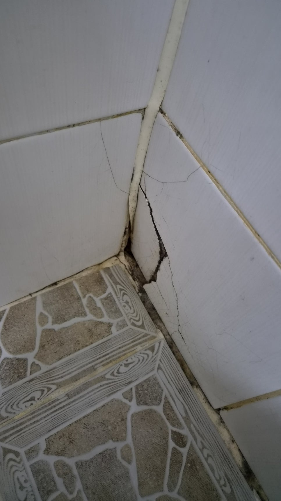
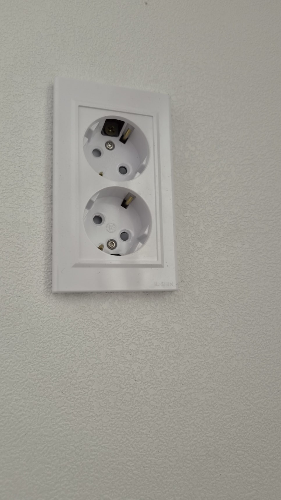
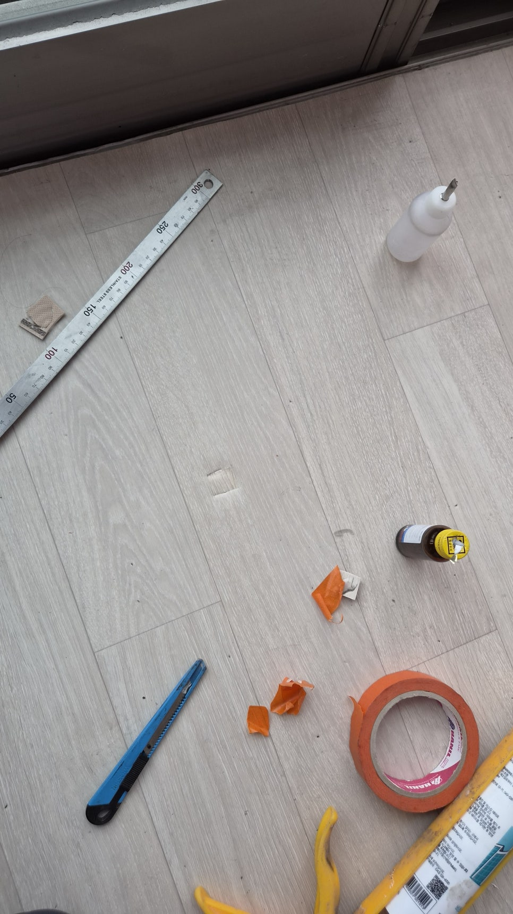

2026.04.30 실제 시공사례
울산 남구 삼산동 원상복구 비용 고민, 빌라 부분수리로 해결한 실제 사례
마음이 무거워지는 부담되는 순간이 있습니다. 짐 정리는 끝났는데 집 상태를 보니 이대로 나가도 될지 고민이 되는 순간입니다. 울산 남구 삼산동 한 빌라에서
집수리
2026-04-30
2026-04-30-replacement-repair

현장 요약
마음이 무거워지는 부담되는 순간이 있습니다. 짐 정리는 끝났는데 집 상태를 보니 이대로 나가도 될지 고민이 되는 순간입니다. 울산 남구 삼산동 한 빌라에서
이 페이지는 cases_index.json을 바탕으로 자동 생성된 상세 페이지입니다. 기존 목록의 보기 링크와 실제 파일 경로가 일치하도록 구성했습니다.
제목울산 남구 삼산동 원상복구 비용 고민, 빌라 부분수리로 해결한 실제 사례
날짜2026-04-30
분류집수리
상세 URLcases/2026/case-2026-04-30-replacement-repair.html
이미지 갤러리
다운로드된 이미지가 있으면 순서대로 배치하고, 없으면 대표 이미지 한 장으로 대체합니다.


출처 안내
블로그 원문과 인스타그램 링크를 함께 연결해 상세 내용을 바로 확인하실 수 있게 정리했습니다.
- 블로그: https://blog.naver.com/obarksa110/224269836114
- 인스타그램: https://www.instagram.com/reel/DXuJYY-jtc_/?utm_source=ig_web_copy_link&igsh=MzRlODBiNWFlZA==
- 썸네일: assets/images/cases/2026/04/2026-04-30-replacement-repair/01.jpg
안내
사례 목록으로 돌아가려면 전체 시공사례 보기를 이용하시면 됩니다.
누락된 상세 페이지는 sync_homepage.py --apply 실행 시 자동 생성됩니다.